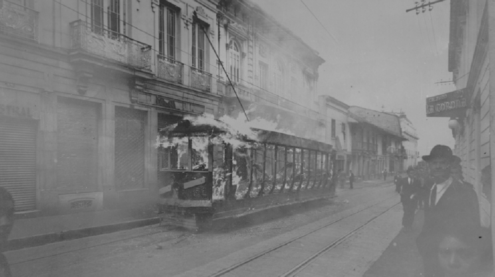

El 9 de abril de 1948 no es una fecha más en el calendario colombiano; es el parteaguas
del siglo XX, un evento que redefinió el curso político, social y urbano de Bogotá.

Bogotá en llamas, disturbios acontecidos el 9 de abril de 1948/FOTO: Sady González-1948-Archivo
Bogotá
Antecedentes: La Tormenta que se Avecinaba
El estallido no fue un rayo en cielo sereno, sino la culminación de tensiones acumuladas durante años. En un
clima de profunda polarización, emergió la figura de Jorge Eliécer Gaitán, quien con un discurso carismático que
denunciaba a la "oligarquía", logró canalizar el descontento de las masas populares.
Cronología de un Día Fatídico
1:05 p.m.
El Magnicidio
Al salir de su oficina, Jorge Eliécer Gaitán es abatido a tiros. La multitud captura y lincha al presunto
autor, Juan Roa Sierra.
1:30 p.m.
La Radio Propaga el Caos
La noticia se propaga por las emisoras, que son tomadas por líderes liberales para incitar a la rebelión,
convirtiendo la revuelta en un levantamiento nacional.
Media Tarde
La Ciudad en Llamas
La multitud, enardecida, incendia tranvías, edificios gubernamentales e iglesias. La policía es
desbordada.
Consecuencias: La Larga Sombra del 9 de Abril
El evento provocó un profundo cambio demográfico: las clases altas aceleraron su éxodo del centro hacia el
norte, agudizando un patrón de segregación socio-espacial que define a la ciudad hoy.
0Muertos (Aprox.)
El trágico saldo solo en la capital
0Tranvías Incendiados
Denunciado como sabotaje deliberado
El caos proporcionó la justificación perfecta para acelerar planes de "modernización" que implicaban demoler
parte del trazado colonial para dar paso a grandes avenidas, como la Carrera Décima. El Bogotazo fue el
catalizador que permitió a los planificadores imponer su visión de ciudad.
El Tranvía: Crónica de un Símbolo Perdido (1884-1951)
El tranvía de mulas en su inauguración en 1884. El inicio de una era.
Durante 67 años, el tranvía fue un actor central en la vida de Bogotá, trazando el mapa
de su crecimiento. Su historia es la de las promesas de modernidad y de las fuerzas que lo borraron del paisaje.
Evolución sobre Rieles
1884
Nacimiento Animal
Se inaugura el tranvía de mulas, conectando la Plaza de Bolívar con Chapinero y marcando el primer paso
hacia la modernización del transporte público.
1910
La Era Eléctrica
Llega el tranvía eléctrico, un símbolo de progreso y estatus para la capital, que expandió sus rutas y se
convirtió en el eje de la vida urbana.
1948
El Golpe del Bogotazo
Durante los disturbios, 34 vagones son incendiados en un acto denunciado como sabotaje. Fue una herida
mortal para un sistema que ya enfrentaba competencia.
1951
El Final del Recorrido
El alcalde Fernando Mazuera Villegas, con intereses en la importación de buses, ordena la supresión
definitiva del sistema. Bogotá se despide de sus rieles.
El Ocaso y el Golpe de Gracia
La creencia de que el Bogotazo fue el único responsable de la muerte del tranvía es una simplificación. Si bien
los incendios fueron un golpe devastador, el sistema ya se encontraba en una situación precaria, enfrentando una
competencia agresiva por parte de las cooperativas de autobuses privados, presuntamente vinculadas a intereses
políticos.
Personaje Clave
Fernando Mazuera Villegas
El alcalde que en 1951 ordenó el fin del tranvía. Sus críticos señalan que tenía intereses económicos
personales en la importación de los buses trolley que reemplazaron al sistema de rieles.
Los Cafés Olvidados: Refugios de la Bohemia
El café Winsor fue uno de los cafés más importantes de la década de los veinte. Foto: Tomada de
/facartes.uniandes.edu.co.
Antes de las franquicias, Bogotá vibraba al ritmo de tertulias en establecimientos que
eran el escenario de la creación literaria, la conspiración política y el debate artístico. La desaparición de
estos cafés icónicos es un testimonio de cómo la transformación de la ciudad desmanteló los espacios que
albergaban su alma bohemia.
Los Nuevos
León de Greiff y El Automático
El Automático era el fortín del poeta y su grupo "Los Nuevos". Funcionaba como una galería de arte
improvisada y un club social donde se gestaba la vanguardia cultural.
En el otro extremo del espectro se encontraba El Cisne, el cuartel general del nadaísmo, un movimiento
literario contestatario y rebelde que buscaba romper con las tradiciones establecidas.
El Nadaísmo
La Contracultura en El Cisne
Este café era el refugio de los jóvenes poetas nadaístas, quienes con su irreverencia y su nueva visión del
mundo, desafiaban el statu quo de la Bogotá de mediados del siglo XX.
La Memoria vs. El Concreto
La demolición de ambos cafés para dar paso a la construcción de la Torre Colpatria en la década de 1970 es uno
de los actos más simbólicos de la modernización de Bogotá: la sustitución de la cultura bohemia y la tertulia
por la modernidad corporativa y financiera.
Antes
Ahora
La Ciudad Hecha a Mano: La Gesta de los Barrios Populares
Panorámica de un barrio de autoconstrucción, resultado de décadas de desplazamiento y lucha por la
vivienda.
Mientras la Bogotá "formal" se expandía al norte, en sus periferias surgía otra ciudad,
una no planificada en los tableros de los arquitectos, sino construida con las manos y la necesidad de sus
habitantes.
El Éxodo: La Violencia como Motor
El Bogotazo de 1948 intensificó "La Violencia" en las zonas rurales, provocando un desplazamiento forzado
masivo hacia la capital. Esta migración creó una presión demográfica sin precedentes.
Crecimiento Poblacional de Bogotá
1951715,000
19641,697,000
La población de Bogotá se más que duplicó en poco más de una década.
Sin políticas de vivienda asequible, la única alternativa para cientos de miles fue la ocupación organizada de
terrenos en la periferia de la ciudad.
Las Protagonistas
Las Mujeres en la Construcción Comunitaria
En la gesta de los barrios de autoconstrucción, las mujeres desempeñaron un papel protagónico. Ellas
lideraron las "ollas comunitarias", la construcción de escuelas y la lucha por los servicios públicos,
convirtiéndose en el pilar de la nueva comunidad.
Plan vs. Realidad
El caso del barrio Policarpa Salavarrieta, nacido en 1961 y liderado por la Central Nacional Provivienda
(Cenaprov), es un ejemplo de esta lucha. La siguiente imagen contrasta la rigidez de la planificación urbana
formal con la orgánica y urgente realidad de la autoconstrucción.
El Plan
La Realidad
...
El Alma Oculta: Mitos y Cultos Urbanos
Entrada principal del Cementerio Central de Bogotá, panteón oficial y santuario para diversos cultos
populares.
Paralela a la historia oficial, corre una corriente de memoria popular que se manifiesta
en el folclore y las leyendas de la ciudad. Estas narrativas revelan el alma oculta de Bogotá.
El Cementerio Central: Panteón y Santuario
Este lugar es un espacio de dualidad: es el panteón oficial de la nación, pero también un vibrante santuario
popular. Aquí, la devoción se dirige a un panteón alternativo de "santos" no oficiales.
Leo Kopp
Pasa el cursor para revelar
El Santo del Trabajo
Fundador de la cervecería Bavaria. La gente le susurra a su estatua para pedirle favores laborales y
económicos.
Julio Garavito
Pasa el cursor para revelar
El Astrónomo de la Fortuna
Científico y astrónomo. Los apostadores le rezan para tener suerte en el chance y la lotería.
Las Hnas. Bodmer
Pasa el cursor para revelar
Protectoras de la Infancia
Dos niñas cuyas tumbas están llenas de juguetes y dulces, dejados por padres que piden protección para
sus hijos.
Estos cultos, con sus rituales específicos, representan una contramemoria que desafía la narrativa oficial,
respondiendo a las urgencias de la vida cotidiana de la gente.